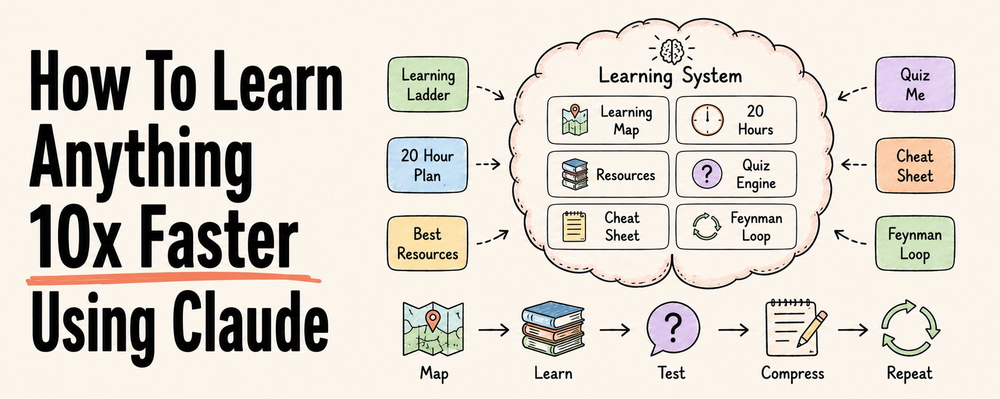
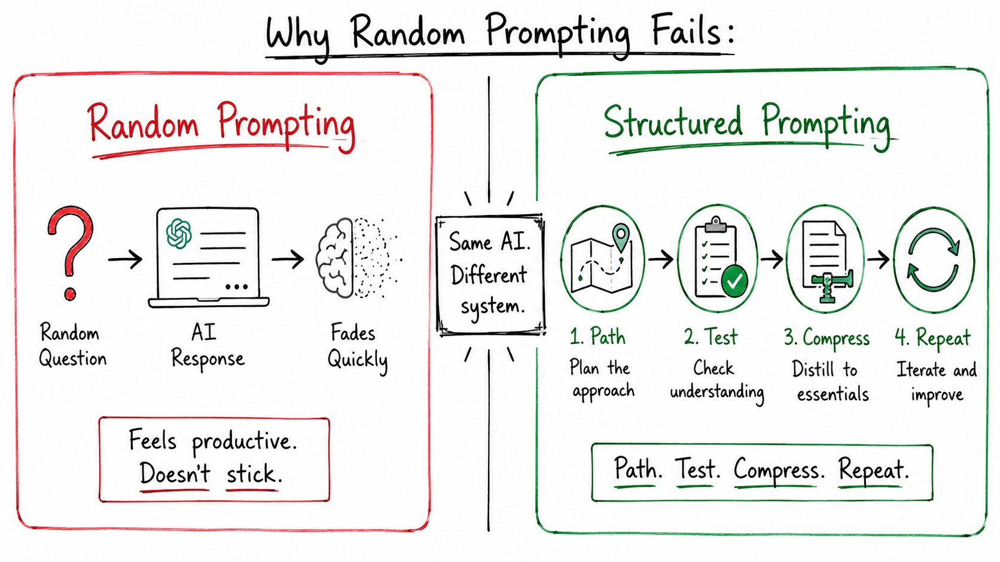
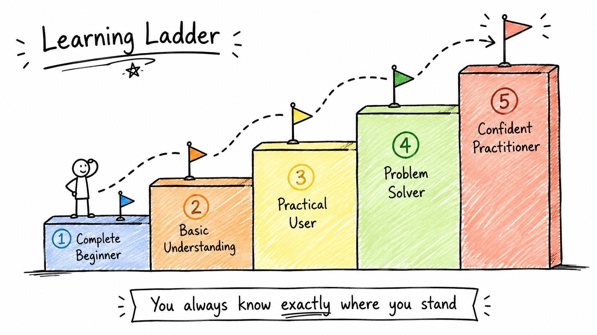
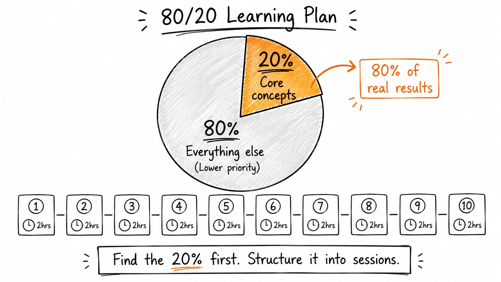
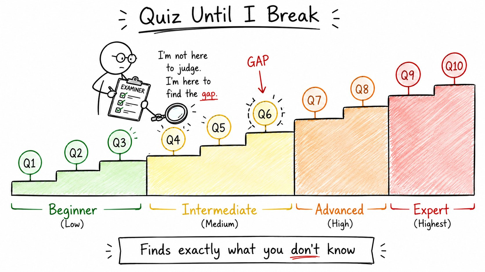
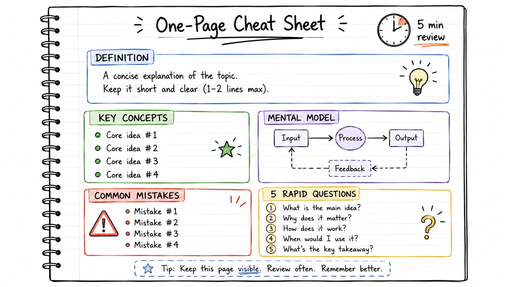
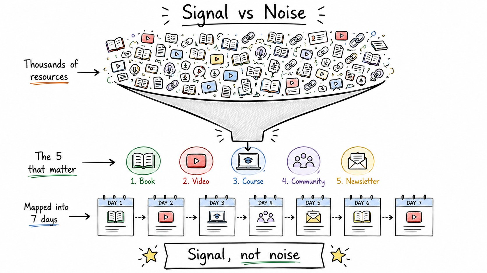
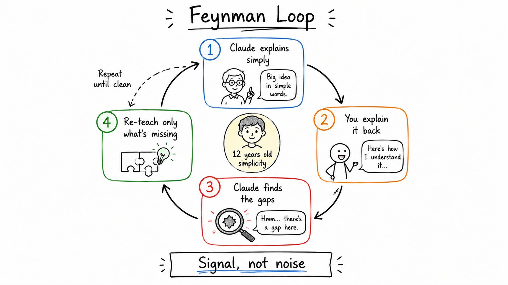
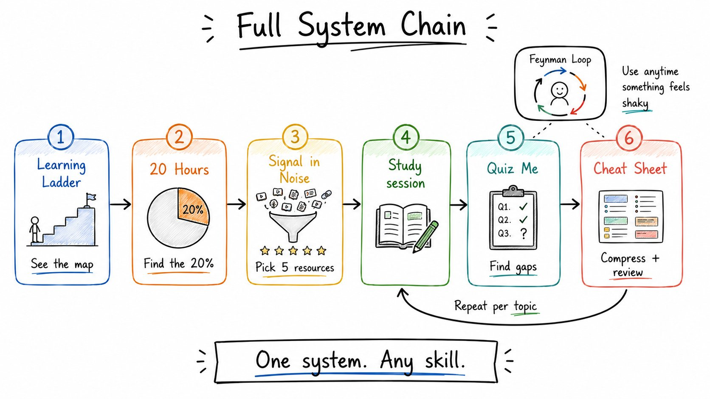

Learn Anything 10x Faster
Claude 6 个学习 prompt 串成 4 阶段系统 · 中英切换 + 一键复制
Rahul 那条 157K 浏览 X 长文。学习新技能最常见的失败模式不是 AI 不行——是你在「随机提问、随机回答、感觉在学、一周后忘光」。本文拆解 6 个 prompt，把 Claude 变成你的私人导师、出题官、资源策展人、学伴，串成 Path → Test → Compress → Feedback 4 阶段闭环。每张 prompt 卡片支持中英文切换 + 一键复制。

Rahul · How To Learn Anything 10x Faster Using Claude · 2026/06/20
学任何新东西，今天是既容易又混乱的。容易——因为 AI 几秒能解释任何事；混乱——因为多数人就是「随机提问、随机回答、感觉在学」，一周后什么都没留下。
问题不在 AI，在你的用法。Rahul 那条 157K 浏览 X 长文给了 6 个 prompt，把 Claude 变成你的私人导师、出题官、资源策展人、学伴。不是为了拿答案，是为了真的学会。
本文按 8 个章节展开：先讲为什么随机 prompt 永远学不会（cap 01），然后逐个拆解 6 个 prompt——Learning Ladder / 20 Hours / Quiz Me / Cheat Sheet / Signal in Noise / Feynman Loop（cap 02-07），再讲怎么把它们串成 4 阶段闭环系统（cap 08）。每张 prompt 卡片可中英切换 + 一键复制。
Why random prompting doesn't work
你问 Claude「解释一下量子计算」。
它给你一个不错的答案。
你觉得自己聪明了 10 分钟。
然后什么都没留下。因为没有结构、没有测试、没有重复、没有反馈循环。
真正的学习需要 4 件事，AI 对话里通常都跳过了：
- Path（路径） —— 你知道按什么顺序学什么
- Test（测试） —— 你发现自己实际不知道什么
- Compression（压缩） —— 用前能快速复习
- Feedback loop（反馈循环） —— 漏洞立刻被抓到并修复
下面 6 个 prompt，每个对应其中一个。

Prompt 1 · Build a Learning Ladder
多数人学不会，是因为基础还没打牢就冲高级材料。
这个 prompt 把任何主题拆成 5 个清晰的难度阶梯，从完全新手到自信实践者，每阶都有里程碑和自测题。你永远清楚自己站在哪。

你会得到什么：一张从「完全不会」到「能上手用」的 5 阶地图。每阶都有自测题，挡住了你跳过基础的可能。
Prompt 2 · Learn Anything in 20 Hours
多数主题都有一小撮核心想法，懂了它们就解锁了整个领域。
这个 prompt 先找出那 20% 的核心，再把它们变成 10 节课、每节 2 小时的学习计划——每节都有练习、资源、复习题。

你会得到什么：一份 20 小时冲刺计划——每节 2 小时、共 10 节，知道每节学什么、练什么、用什么资源、复习什么。
Prompt 3 · Quiz Me Until I Break
被动阅读让人觉得在学。主动回忆才能看到真相。
这个 prompt 把 Claude 变成一个严格的考官——一次问一道题、每次打分、找出你具体的漏洞、只重讲你没答对的部分，难度逐步递增。

你会得到什么：10 道逐级加码的题，每道都打分、找漏洞、重讲。最后给你弱点清单 + 5 道终极挑战。
Prompt 4 · Create a One-Page Cheat Sheet
大脑对结构的记忆比对段落强得多。
这个 prompt 把任何主题压缩成一页可以 5 分钟扫完的速查表——定义、规则、示例、常见坑、速测题，全部用项目符号排好。考试前、会议前、面试前、真正要用前——看一眼就够了。

你会得到什么：一张 5 分钟可扫完的一页表——考试前看一眼、面试前看一眼、真正要用前看一眼，胜过翻书 1 小时。
Prompt 5 · Find the Signal in the Noise
每个主题都有成千上万的资源。多数人浪费时间在收藏，不在学习。
这个 prompt 找出杠杆最高的 5 个——书、视频、课程、社群——排好优先级，再用这 5 个资源给你拼一个 7 天学习路径。

你会得到什么：5 个精选资源（按使用顺序排好）+ 一份 7 天学习路径。不再收藏 100 个资源然后一个都不打开。
Prompt 6 · Use the Feynman Loop
费曼方法几乎能瞬间暴露假懂。
Claude 用 12 岁小孩都能懂的话讲给你听，你用自己的话讲回去，Claude 找出每一个漏洞、只重讲你漏的部分——循环重复，直到你的解释干净准确。

你会得到什么：一个把你讲的内容反复检查的对话循环，直到你能用大白话讲清楚。最后一份干净版本可存为笔记。
How to chain these together
这 6 个 prompt 不是 6 个独立技巧。它们是一个学习系统的不同阶段。
- 先跑 Learning Ladder — 看整张地图，知道自己站在哪、要往哪走
- 用 20 Hours — 找到值得先攻的核心 20%
- 每学完一节就跑 Quiz Me — 找出真实漏洞
- 学完用 Cheat Sheet 压缩 — 5 分钟可复习的速查表
- 开课前跑 Signal in Noise — 一次性挑出 5 个资源，别再收藏第 6 个
- 哪里还虚就跑 Feynman Loop — 用大白话讲出来才算真懂
Path → Test → Compress → Repeat.
这就是整个系统。
多数 AI 学习对话只是「给答案没结构」。这套系统强制带进真实学习必需的 4 件事：
- Path — 你永远不迷路，下一步学什么很清楚
- Test — 在考试、面试、真实项目让你付出代价之前就知道自己哪里不会
- Compression — 复习只要 5 分钟，不用重新读一遍
- Feedback loop — 漏洞立刻被抓到并修复，而不是悄悄堆积

SOURCES & CREDITS
引用与原文出处
-
ORIGINAL ARTICLE
How To Learn Anything 10x Faster Using Claude
作者：Rahul (@sairahul1) · 发布于 2026/06/20 · 157K 浏览
原文链接：https://x.com/sairahul1/status/2068250224532050089 - AUTHOR · X https://x.com/sairahul1
- AUTHOR · WEBSITE nichetraffickit.com — Founder of NicheTrafficKit
- INTERPRETATION 本文为解读版本，按中文阅读习惯重排。原文中 6 个 prompt 模板均保留英文原貌；中文版为意译，便于理解。如需引用请以原文为准。
这 6 个 prompt 不是用来收藏的——是用来用的。挑一个你最近想学的技能，把 [topic] 换成它，按 Path → Test → Compress → Feedback 跑一遍。一周后回头看，多数人收藏了一堆资源但什么都没学，你已经跑完了一个完整的闭环。
Path·Test·Compress·Repeat. That's the entire system.
读完了。下一步：挑一个你最近想学的技能，把 [topic] 换成它，粘 Prompt 1。一周后你会比多数人扎实得多。